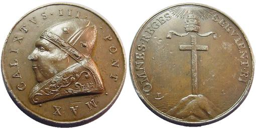
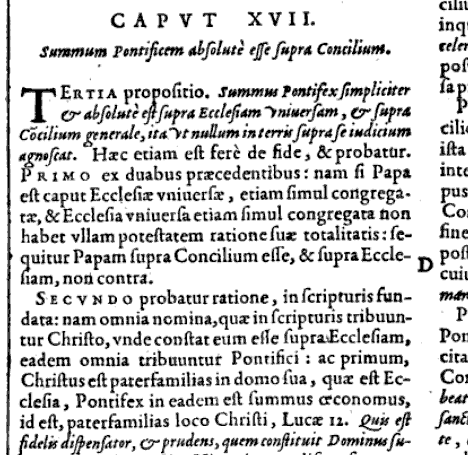

|
Here you see
the coat of arms for the Vatican
City State. Take note of the crown on top, a symbol of papal
authority. It is a triple tiered crown, that is also called a tiara or triregno
in Latin.
|
|
Concerning the
extent of Papal dignity, authority, or dominion and infallibility.
(Quoadea quoeconcernunt papae dignitatem, auctoritatem,
seu potestatem, et infallibilitatem.)
#1. "The
Pope is of so great dignity and so exalted that he is not mere man, but
as it were God, and the vicar of God."
(#1. "Papa tantae est dignitatis et cesitudinis, ut non sit simplex
homo, sed quasi Deus, et Dei vicarius.")
#13.
"Hence the Pope is crowned with a triple crown, as king of heaven and
of earth and of the lower regions."
(#13. Hinc Papa triplici corona coronatur tanquam rex coeli, terre et
infernoram.")
 |
#18. "As to
papal authority, the Pope is as it were God on earth, Sole sovereign of
all the faithful of Christ, chief king of kings, having a plentitude of
unbroken power, entrusted by the omnipotent God to govern the earthly
and heavenly kingdoms."
(#18.
"Deveniendo ad Papae auctoritatem, Papa est quasi Deus in terra unicaus
Christifidelium princeps, regum omnium rex maximus, plenitudinem
potestatis continens, cui terreni simul, ac coelestis imperii
gubernacula ab omnipotenti Deo credita sunt.")
|
|
John
XXIII wearing the triregno crown
presented to him in 1959.
|
#30.
"The Pope is of so great authority and power, that he is able to
modify, declare, or interpret even divine laws."
(#30. "Papa tantae est auctoritatis et potestatis, ut possit quoque
leges divinas modificare, declarare, vel interpretari, ad num.")
Source:
Lucius Ferraris,
“Papa,” art. 2, in his Prompta Bibliotheca Canonica,
Juridica, Moralis, Theologica, Ascetica, Polemica, Rubristica,
Historica. (“Handy Library”), Vol. 5, published in Petit-Montrouge
(Paris) by J. P. Migne, 1858 edition, column 1823, Latin.
Here are
the relevant scanned pages from Ferraris'
Prompta Bibliotheca for those who would like to see the
original Latin text of the above quotes.

These
papal claims, to include the presumed authority to modify the divine
laws of God, were specifically prophesied in the book of Daniel:
Dan
7:25 And he shall speak great words against the most High, and shall
wear out the saints of the most High, and think to change times
and laws: (of the most High) and they shall be given into his
hand until a time and times and the dividing of time.
It is a remarkable fact that the first instance upon record in which
the bishop of Rome attempted to rule the Christian church was by AN
EDICT IN BEHALF OF SUNDAY. It had been the custom of all the churches
to celebrate the passover, but with this difference: that while the
eastern churches observed it upon the fourteenth day of the first
month, no matter what day of the week this might be, the western
churches kept it upon the Sunday following that day; or rather, upon
the Sunday following Good Friday. Victor, bishop of Rome, in the year
196,36 took upon him to impose the Roman custom upon all the
churches; that is, to compel them to observe the passover upon Sunday.
"This bold attempt," says Bower, "we may call the first essay of papal
usurpation."37 And Dowling terms it the "earliest instance
of Romish assumption."38
36 Bower`s History of the Popes, vol. 1. pp. 18, 19;
Rose's Neander, pp. 188-190;
Dowling`s History of Romanism, book 1,
chap. 2. sec. 9.
37 History of the Popes, vol. 1. p. 18.
38 History of Romanism, heading of page 32.
Source: History of the Sabbath
and First Day of the Week, by J.N. Andrews, Chapter 16, Origin
of First-Day Observance, copyright 1998, TEACH Services, Inc., ISBN
1-57258-107-7, page 276.
THE
KEYS OF THE KINGDOM
Did you
notice the two keys in the Vatican's coat of arms? Those represent the
keys to the kingdom, the assumed authority to bind and loose claimed by
the Papacy from the book of Matthew-
Mat
16:15 He saith unto them, But whom say ye that I
am?
Mat 16:16 And Simon Peter answered and said, Thou art the Christ, the
Son of the living God.
Mat 16:17 And Jesus answered and said unto him, Blessed
art thou, Simon Barjona: for flesh and blood hath not revealed it unto
thee, but my Father which is in heaven.
Mat 16:18 And I say also unto thee, That thou
art Peter, and upon this rock I will build my church; and the gates of
hell shall not prevail against it.
Mat 16:19 And I will give unto thee the keys of
the kingdom of heaven: and whatsoever thou shalt bind on earth shall be
bound in heaven: and whatsoever thou shalt loose on earth shall be
loosed in heaven.
Let's
look at this passage in detail-
Verse 15
- Jesus asks the disciples who they think he is.
Verse 16
- Simon Peter (Cephas) answers that he knows Jesus to be the Christ,
the Messiah, the very Son of the Living God. This is the very
foundation of the Gospel message. Jesus is the Messiah.
Verse 17
- Jesus responds that the ONLY reason that Peter knows this is because
it has been revealed to him by none other than God the Father.
Verse 18
- Continuing, Jesus remarks to Peter that upon the rock of His true
identity, Jesus as the Son of God, Jesus the long awaited Messiah,
Jesus the salvation of all mankind, Jesus the one mediator for mankind,
upon this foundation stone of fact the church of faithful believers
will surely overcome sin and death (hell). That is, after all, the
promise of John 3:16 isn't it? The Catholic Church appeals to this same
verse to say that Peter is the foundation of the Church, and that his
Papal office is declared here. This is a substitution of the Papacy in
place of the Gospel message, yet again.
Verse 19
- The Papacy presumes that in this verse Jesus bestowed on Peter the
absolute right and authority to govern the church as he (Peter) deemed
appropriate, and that God would back him up, and his successors, in all
they do in His name with that authority. But there is another
interpretation that is not nearly so generous in it's scope-
And I
will give unto thee the keys of the kingdom of heaven: and whatsoever
thou shalt bind on earth shall (first) be bound in heaven: and
whatsoever thou shalt loose on earth shall (first) be loosed in heaven.
I
believe this verse applies to all Christians, not just Peter. The word
of God is the limiting factor in our authority. We only have authority
to declare to the world what God's word reveals to us in His
scriptures. As an example, the Christian can declare adultery to be a
sin, condemned by God, but only because God himself declares this in
His scriptures. But, beyond the clear written word of God, though, the
Christian has no right to go. That is entirely different from the
Catholic interpretation of absolute God-like unerring power presumed by
the Papacy.
Luke 11:52 Woe
unto you, lawyers! for ye have taken away the key of knowledge:
ye entered not in yourselves, and them that were entering in ye
hindered.
So, to
make it clear, just what is (are) the key(s) to the kingdom? Well, how
will any mortal human being enter into the kingdom? By faith. Faith in
what? Faith in Jesus Christ, the Rock of our Salvation. Peter had the
Gospel message revealed to him by God the Father, the very keys to the
kingdom to all who believe. Peter's charge was to "feed my sheep" (John
21:15-17); proclaim what the Father had made known to him, that Jesus
was the Messiah, and that He (Jesus) is the only way to overcome sin.
It is a duty and responsibility levied on all who know the Gospel
message. And how do we know the true Gospel message today? The Bible
reveals it to us through Scripture via the Holy Spirit. The two keys to
the kingdom are the Old and New Testaments of Scripture!
So to
wrap up Matt 16, I have just shown you a rational and valid
interpretation that completely negates the Catholic claim of infallible
vested Papal authority and the Petrine theory of Apostolic succession.
They are pure invention, a fabrication not even dreamed of until a
couple of hundred years after the time of Christ, when the church was
trying to establish the authority of the Bishop of Rome over the
Church. In the place of the Gospel message, the Catholic Church claims
a blanket infallible Papal authority to proclaim Tradition. Again a
substitution of the Papacy for the Gospel message. That process is
called AntiChrist.
It is
worth noting that the book of Mark relates the same conversation Jesus
had with the disciples beginning in chapter 8, verse 27, and Mark
curiously overlooks Peter's alleged investiture as Pope. Why? Surely if
Mark knew Peter to be the visible head of the church, this is a
remarkable and inexcusable omission on his part. So, because of the
omission, it is apparent that Mark knew nothing of Peter's
alleged supreme authority over the church.
Roman Emperor Decrees the
Primacy and Authority of the Bishop of Rome
[POPE] DAMASUS, 366-384.
6. In his episcopate, Valentinian I enacted a law making the bishop of
Rome the judge of other bishops. A council in Rome, A. D. 378, enlarged
his powers of judging, and petitioned the emperor Gratian to exempt the
bishop of Rome from all civil jurisdiction except that of the emperor
alone; to order that he be judged by none except a council, or the
emperor direct; and that the imperial power should be exerted to compel
obedience to the judgment of the bishop of Rome concerning other
bishops. Gratian granted part of their request and it was made to count
for all.
Source: Ecclesiastical
Empire, by A. T. Jones, Review and Herald Publishing Co.,
Battle Creek, Michigan, 1901, pg. 157.
The development of the papal power
can only be briefly summarized here. The first great step took
place under [Pope] Damasus (366-384) who obtained from the Emperor
Valentinian I the right of all bishops in the western part of the
empire who were condemned by their provincial synod to appeal to the
Bishop of Rome.
Source: THE CHRISTIAN FAITH: AN
INTRODUCTION TO DOGMATIC THEOLOGY, by Claude Beaufort Moss,
D.D., London S.P.C.K, 1965, Holy
Trinity Church, Marylbone Road London, NW 1,
Printed in Great Britain by Richard Clay (The Chaucer Press) Ltd Bungay Suffolk, first printing 1943, Part II, Chapter 49,
III. The Papacy a Development from the Order of Bishops, 1. Origin and Development of the Papacy.
Pope Leo
I (440 - 461 A.D.) Asserts Bishop of Rome's Authority
The
Lord . . . wanted His gifts to flow into the entire body from Peter
himself, as if from the head, in such a way that anyone who had dared
to separate himself from the solidarity of Peter would realize that he
was himself no longer a sharer in the divine mystery . . . The
Apostolic See . . . has on countless occasions been reported in
consultation by bishops . . . And through the appeal of various cases
to this see, decisions already made have been either revoked or
confirmed, as dictated by longstanding custom.
Source:
Pope Leo I, Letter to the Bishops of Vienne, July, 445 A.D.,
10:1-2; in The Faith of the Early Fathers (FEF), 3
volumes, edited and translated by William A Jurgens, Collegeville, MN:
Liturgical Press, 1970, 1st edition, volume 3, p. 269.
Although
bishops have a common dignity, they are not all of the same rank. Even
among the most blessed Apostles, though they were alike in honor, there
was a certain distinction of power. All were equal in being chosen, but
it was given to one to be preeminent over the others . . . the care of
the universal Church would converge in the one See of Peter, and
nothing should ever be at odds with this head.
Source:
Pope Leo I, Letter to Bishop Anastasius of Thessalonica, c.446
A.D., 14:11; in Jurgens, FEF, volume 3, p. 270.
From
the whole world only one, Peter, is chosen to preside over the calling
of all nations, and over all the other Apostles, and over the Fathers
of the Church . . . Peter . . . rules them all, of whom, too, it is
Christ who is their chief ruler. Divine condescension, dearly beloved,
has granted to this man in a wonderful and marvelous manner the
aggregate of its power; and if there was something that it wanted to be
his in common with other leaders, it never gave whatever it did not
deny to others except through him.
Source:
Pope Leo I, Sermons, 4:2; in Jurgens, FEF, volume 3, p.
275.
Pope
Gregory the Great (590–604 A.D)
"Universal Pontiff" a profane title
For,
as your venerable Holiness knows, this name of Universality was offered
by the holy synod of Chalcedon to the pontiff of the Apostolic See
which by the providence of God I serve(2). But no one of my
predecessors has ever consented to use this so profane a title; since,
forsooth, if one Patriarch is called Universal, the name of Patriarch
in the case of the rest is derogated. But far be this, far be it from
the mind of a Christian, that any one should wish to seize for himself
that whereby he might seem in the least degree to lessen the honour of
his brethren. While, then, we are unwilling to receive this honour when
offered to us, think how disgraceful it is for any one to have wished
to usurp it to himself perforce.
Wherefore
let not your Holiness in your epistles ever call any one Universal,
lest you detract from the honour due to yourself in offering to another
what is not due.
Source:  BOOK V,
EPISTLE XLIII: TO EULOGIUS AND ANASTASIUS, BISHOPS from Pope
Gregory the Great, online at EWTN. (You will need to scroll down to
find the document)
BOOK V,
EPISTLE XLIII: TO EULOGIUS AND ANASTASIUS, BISHOPS from Pope
Gregory the Great, online at EWTN. (You will need to scroll down to
find the document)
Pope
Gregory the Great renounces the title "Universal Pope".
Your
Blessedness has also been careful to declare that you do not now make
use of proud titles, which have sprung from a root of vanity, in
writing to certain persons, and you address me saying, As you have
commanded. This word, command, I beg you to remove from my hearing,
since I know who I am, and who you are. For in position you are my
brethren, in character my fathers. I did not, then, command, but was
desirous of indicating what seemed to be profitable. Yet I do not find
that your Blessedness has been willing to remember perfectly this very
thing that I brought to your recollection. For I said that neither to
me nor to any one else ought you to write anything of the kind; and lo,
in the preface of the epistle which you have addressed to myself who
forbade it, you have thought fit to make use of a proud appellation,
calling me Universal Pope. But I beg your most sweet Holiness to do
this no more, since what is given to another beyond what reason demands
is subtracted from yourself. For as for me, I do not seek to be
prospered by words but by my conduct. Nor do I regard that as an honour
whereby I know that my brethren lose their honour. For my honour is the
honour of the universal Church: my honour is the solid vigour of my
brethren. Then am I truly honoured when the honour due to all and each
is not denied them. For if your Holiness calls me Universal Pope, you
deny that you are yourself what you call me universally. But far be
this from us. Away with words that inflate vanity and wound charity.
And,
indeed, in the synod of Chalcedon and afterwards by subsequent Fathers,
your Holiness knows that this was offered to my predecessors(1). And
yet not one of them would ever use this title, that, while regarding
the honour of all priests in this world, they might keep their own
before Almighty God.
Source: BOOK VIII,
EPISTLE XXX: TO EULOGIUS, BISHOP OF ALEXANDRIA online at EWTN.
(You will need to scroll down to find the document)
Pope
Gregory the Great criticizes use of the title "Universal Bishop"
and denies Peter was a "Universal Apostle".
For to
all who know the Gospel it is apparent that by the Lord's voice the
care of the whole Church was committed to the holy Apostle and Prince
of all the Apostles, Peter. For to him it is said, Peter, lovest thou
Me? Feed My sheep (John xxi. 17). To him it is said, Behold Satan hath
desired to sift you as wheat; and I have prayed for thee, Peter, that
they faith fail not. And thou, when thou art converted, strengthen thy
brethren (Luke xxii. 31). To him it is said, Thou art Peter, and upon
this rock I will build My Church, and the gates of hell shall not
prevail against it. And I will give unto thee the keys of the kingdom
of heaven and whatsoever thou shalt bind an earth shall be bound also
in heaven; and whatsoever thou shalt loose on earth shall be loosed
also in heaven (Matth. xvi. 18).
Lo, he
received the keys of the heavenly kingdom, and power to bind and loose
is given him, the care and principality of the whole Church is
committed to him, and yet he is not called the universal apostle; while
the most holy man, my fellow-priest John, attempts to be called
universal bishop. I am compelled to cry out and say, O tempora, O mores!
Source: BOOK V,
EPISTLE XX: TO MAURICIUS AUGUSTUS from Pope Gregory the Great
(590–604), online at EWTN. (You will need to scroll down to find the
document)
Pope
Gregory the Great calls the title Universal "pestiferous".
... Be
it known then to your Fraternity that John, formerly bishop of the city
of Constantinople, against God, against the peace of the Church, to the
contempt and injury of all priests, exceeded the bounds of modesty and
of his own measure, and unlawfully usurped in synod the proud and
pestiferous title of oecumenical, that is to say, universal. ...
... I
exhort and entreat that not one of you ever accept this name, that not
one consent to it, that not one write it, that not one admit it
wherever it may have been written, or add his subscription to it; but,
as becomes ministers of Almighty God, that each keep himself from this
kind of poisoned infection, and give no place to the cunning
lier-in-wait, since this thing is being done to the injury and
rendering asunder of the whole Church, and, as we have said, to the
condemning of all of you. For if one, as he supposes, is universal
bishop, it remains that you are not bishops. ...
Source: BOOK IX,
EPISTLE LXVIII TO EUSEBIUS OF THESSALONICA from Pope Gregory
the Great (590–604), online at New Advent. (You will need to scroll
down to find the document)
Pope Gregory the Great declares title "Universal
Priest" to be Antichrist.
| |
Whosoever
calls himself, or desires to be called, Universal Priest, is in his
elation the precursor of Antichrist, because he proudly puts himself
above all others. Nor is it by dissimilar pride that he is led into
error; for, as that perverse one wishes to appear as God above all men,
so whosoever this one is who covets being called sole priest, he extols
himself above all other priests.
Source: Pope
Gregory the Great (590–604), Letter to Emperor Mauricius Augustus
(against assumption of title “universal” by Patriarch of
Constantinople) in his Epistles, bk. 7, letter 33, trans. in NPNF, 2d
series, Vol. 12, p. 226 (2d pagination).
Here is the above BOOK VII,
EPISTLE XXXIII: TO MAURICIUS AUGUSTUS online at EWTN. (You will
need to scroll down to find the document)
|
|
Tiara
given to Pius IX
by Queen Isabella II of Spain (1854)
Set with diamonds, pearls,
emeralds, rubies and sapphires.
|
|
So Pope
Gregory the Great condemned the titles of Universal Patriarch,
Universal Pope, Universal Bishop and Universal Priest. He saw that such
pomposity was satanic or antichrist in nature. In any case, Pope
Boniface III (607 A.D.), a mere three years after the death of Gregory,
petitioned Emperor Phocus to declare the Roman See the head of all
Christian churches and that the title Universal Bishop would apply
exclusively to the Bishop of Rome. This was done in an attempt to end
the ambitions of the Patriarch of Constantinople.
See Boniface III
online at New Advent.
Emperor
Phocus granted the request, and a grateful Boniface III erected a
gilded statue of him in Rome proclaiming his greatness.
Donation
of Constantine to the "Universal Pope" of Rome.
...
Our most gracious serenity desires, in clear discourse, through the
page of this our imperial decree, to bring to the knowledge of all the
people in the whole world what things our Saviour and Redeemer the Lord
Jesus Christ, the Son of the most High Father, has most wonderfully
seen fit to bring about through his holy apostles Peter and Paul and by
the intervention of our father Sylvester, the highest pontiff and the
universal pope. First, indeed, putting forth, with the inmost
confession of our heart, for the purpose of instructing the mind of all
of you, our creed which we have learned from the aforesaid most blessed
father and our confessor, Sylvester the universal pontiff; and then at
length announcing the mercy of God which has been poured upon us. ...
For
let all the people and the nations of the races in the whole world
rejoice with us; we exhorting all of you to give unbounded thanks,
together with us, to our Lord and Saviour Jesus Christ. For He is God
in Heaven above and on earth below, who, visiting us through His holy
apostles, made us worthy to receive the holy sacrament of baptism and
health of body. In return for which, to those same holy apostles, my
masters, St. Peter and St. Paul; and, through them, also to St.
Sylvester, our father, -the chief pontiff and universal pope of the
city of Rome, -and to all the pontiffs his successors, who until the
end of the world shall be about to sit in the seat of St. Peter: we
concede and, by this present, do confer, our imperial Lateran palace,
which is preferred to, and ranks above, all the palaces in the whole
world; then a diadem, that is, the crown of our head, and at the same
time the tiara; and, also, the shoulder band, -that is, the collar that
usually surrounds our imperial neck; and also the purple mantle, and
crimson tunic, and all the imperial raiment; and the same rank as those
presiding over the imperial cavalry; conferring also the imperial
sceptres, and, at the same time, the spears and standards; also the
banners and different imperial ornaments, and all the advantage of our
high imperial position, and the glory of our power.
Donation
of Constantine online.
Though
proved a forgery in the 15th century, the use of the phrase "universal
pope" in the Donation of Constantine shows the title was attributed to
the Bishop of Rome in the 8th century. For centuries, the Donation of
Constantine was held to be genuine by the Catholic Church.
Pope Leo IX In 1054 A.D. Cites
The Donation of Constantine to Assert Papal Primacy.
Pope Leo IX sent a letter to Michael
Cærularius, Patriarch of Constantinople, in 1054, that cited a large
portion of the Donation of Constantine, to include the phrase
Vicarius Filii Dei, the Roman numerals of which add up to 666. The
reason that Leo provided the Greek Patriarch with the bulk of the text
of the donation, was to officially notify him that Emperor
Constantine had conferred a unique dignity, authority and primacy on
the See of Peter, making Constantinople subject to Rome. Leo IX assured
the Patriarch that the donation was completely genuine, not a fable or
old wives tale, so only the apostolic successor to Peter possessed that
primacy and was the rightful head of all the Church. Little did Leo IX
know that he cited and testified to the authenticity of the most
stupendous fraud in European history. The Patriarch rejected the claims
of papal primacy, and subsequently the Catholic Church was split in two
in the Great Schism of 1054. See 666, The Number of the Beast
for details.
Now note
that Pope Gregory VII also declared himself to be "Universal Pope", a
title which Gregory the Great refused and condemned. This papal claim
has been maintained or embellished on by every subsequent pope,
eventually leading to the declaration of papal infallibility.
THE
DICTATES OF HILDERBRAND (POPE GREGORY VII)
Source:
Gregory VII (1073-1085 A.D.), Dictatus Papae (“Dictates of the Pope”;
sometimes called the Dictates of Hilderbrand), Latin text in Karl
Hofmann, Der Dictatus Papae Gregors VII (Paderborn [Germany]: Ferdinand
Schöningh, 1933), p. 11.
Pope Innocent III (1198-1216)
Claims Divine Authority
Pope Innocent III claimed that only
the Roman Pontiff had the power to transfer and separate bishops,
because when he
separates, it is not a man that separates, but God that separates,
because he acts "not only as a man, but as the true God's vice governor
on earth" [non puri hominis, sed veri Dei vicem gerit in terris], ... he "dissolves not with
human, but with divine authority" [non humana, sed divina
potius auctoritate dissolvit.]:
Non enim homo, sed Deus separat,
quos Romanus Pontifex (qui non puri hominis, sed veri Dei vicem gerit
in terris) ecclesiarum necessitate vel utilitate pensata, non humana,
sed divina potius auctoritate dissolvit.
It is not a man, but God, who
separates those whom the Roman Pontiff (not only as a man, but as the true God's vice
governor on earth), providing for the necessities and the good
of the churches, dissolves not with human, but with divine authority.
Source:
DECRETALES
D. GREGORII PAPAE IX, SUAE INTEGRITATI UNA CUM GLOSSIS RESTTUTE
Ad exemplar Romanum diligenter recognite, LUGDUNI, 1584, liber I,
titulus VII - De Translatione Episcopi, cap. III, col. 217. (138) Download
entire volume, .pdf. All 5 volumes are available at Gallica.
The adjacent gloss for "veri Dei
vicem" adds the following regarding the scope of the Pope's authority
as God's true vice governor:
veri
Dei vicem (gerit).]
Unde
dicitur habere caeleste arbitrium (Cod. de sum. tri. 1. I. in fi.),
Whence he is said to possess a divine judgment,
et
ideo etiam naturam rerum immutat, substantialia unius rei applicando
alii (arg. C. communia de leg. l. 2),
and therefore he altereth the very nature of things, by applying the
things that are of the substance of one thing unto another,
et de
nullo potest aliquid facere (C. rei uxor. act. l. unica in prin. et
De Consecr. Dist. 2. c. 69),
and of nothing he can make something; [to make something out of nothing
is to construct new laws];
et
sententiam, quae nulla est, facit aliquam (Caus. III. Qu. 6. c. 10);
and that sentence which is of no force he can make to be of
force;
quia
in his, quae vult, ei est pro ratione voluntas (Instit. de jure
natu. § sed quod principi. haec quippe.)
and he can do these things, because his will stands for reason.
Nec
est, qui ei dicat, cur ita facis? (De Poen. Dist. 3. c. 22. ex
psona. alias est in c. quauis)
Neither is there any may say unto him, Why dost thou so?
Ipse
enim potest supra jus dispensare (infra, Lib. III. Tit. 8. c. 4,
j. de conces. prae. c. proposuit.)
for he can dispense above the law,
idem
de injustitia potest facere justitiam corrigendo jura et mutando (Lib.
II. Tit. 28. c. 59., j. de appella c. vt debitus., Lib.
IV. Tit. 14. c. 8, et j. de cosang. et affinit. cap. non debet.)
and of unrighteousness make righteousness, correcting and changing laws,
et
plenitudinem obtinet potestatis (Caus. II. Qu. 6. c. 11).
decreto
for he hath the fullness of power.
The
references in the gloss are supplied in:
A
Compendium of Ecclesiastical History, by Dr. John C. L. Gieseler,
Fourth Edition Revised And Amended, Volume III, 1853, translated from
the German by the Rev. John Winstanley Hull, M.A. pg.
161.
The
English translation of the gloss is primarily from:
The
Decades of Henry Bullinger, The Fifth Decade, By Heinrich
Bullinger, Translated By H. I., 1852, pg.
121.
See also:
A
Sketch Of The Romish Controversy By G. Finch, London, 1831,
pg. 318. This book incorrectly reads "Ipse enim potest s. jus
dispensare" in the gloss as "Ipse enim potest sanctum jus
dispensare" (for he can dispense with holy laws,). The
referenced section in the gloss to Lib. III shows that "supra" (for he
can dispense above the law,) is correct.
An excellent searchable version of Gregorius IX
Decretalium compilatio with concordance.
Pope Innocent III Claims
Authority Over Kings
Just as the founder of the universe
established two great lights in the firmament of heaven, the greater
light to rule the day, and the lesser light to rule the night, so too
He set two great dignities in the firmament of the universal church...,
the greater one to rule the day, that is, souls, and the lesser to rule
the night, that is, bodies. These dignities are the papal authority and
the royal power. Now just as the moon derives its light from the sun
and is indeed lower than it in quantity and quality, in position and in
power, so too the royal power derives the splendor of its dignity from
the pontifical authority.... — Letter
to the prefect Acerbius and the nobles of Tuscany, 1198.
Claims of
“I Am Caesar” (Boniface VIII)
| |
The papal
theory made the Pope alone God’s representative on earth and maintained
that the Emperor received his right to rule from St. Peter’s successor.
For historical proof of the genuineness of this position attention was
called to the power of the keys, the Donation of Constantine, the
coronation of Pepin, the restoration of the Empire in the West. … It
was upheld by Nicholas I., Hildebrand, Alexander III., Innocent III.,
and culminated with Boniface VIII. at the jubilee of 1300 when, seated
on the throne of Constantine, girded with the imperial sword, wearing a
crown, and waving a sceptre, he shouted to the throng of loyal
pilgrims: “I am Caesar—I am Emperor.”
|
|
Pius
XII wearing the 1877 tiara of Pius IX
Wide World Photos, Inc.
|
|
Source: Alexander
Clarence Flick, The Rise of the Mediaeval Church, copyright
1909, published in New York: by Burt Franklin, 514 West 113th Street,
p. 413.
Obedience
to the Pope declared necessary for Salvation
We,
moreover, proclaim, declare and pronounce that it is altogether
necessary to salvation for every human being to be subject to the Roman
Pontiff.
Source:
Pope Boniface VIII, Bull Unam Sanctam, promulgated November 18,
1302, in Translations and Reprints From the Original Sources of
European History, Vol. 3 (Philadelphia: University of Pennsylvania
Press, 189–), No. 6, pp. 20–23 (from Latin text of Mury, Revue des
Questions Historiques, Vol. 46, pp. 225, 256, based on the facsimile
from the Papal Regesta).
Liberally
minded Catholic apologists will sometimes suggest that Boniface VIII
meant to apply his remark only to Catholics, and that Protestants are
not automatically excluded from salvation by it. However the Latin text
(in David S. Schaff, The Middle Ages [Philip Schaff, History of the
Christian Church, Vol. 5. New York: Scribner, 1910], part 2, p. 28)
reads omni humanae creaturae (“every human creature"). The
title of the bull, Unam Sanctam (One Holy Church) and its last sentence
make clear that Boniface VIII was declaring that submission to the Pope
of the Holy See of Rome of the Catholic Church was the only means of
salvation and that those resisting that presumed authority were lost
souls. Conservative traditional Catholics will staunchly defend the
statement that "Outside the Catholic Church there is no Salvation", and
will cite Unam Sanctam as proof positive.
Here is
the full text of
UNAM SANCTAM online.
The Decision of the
Pope and the Decision of God Constitute One Decision.
Secunda ratio
accipitur ex parte Papae. solus Papa dicitur esse Vicarius Dei: quia
solum quod ligatur vel solvitur per eum, habetur solutum et ligatum per
ipsum Deum. Sententia igitur Papae et sententia Dei vna sententia est:
sicut una sententia est Papae, et auditoris eius. Cum igitur appellatio
semper fiat a minori iudice ad superiorem, sicut nullus est major
seipso: ita nulla appellatio tenet, facta a Papa ad Deum: quia unum
consistorium est ipsius Papae et ipsius Dei: cuius consistorij clauiger
et ostiarius est ipse Papa. Nullus ergo potest appellare a Papa ad
Deum. Nullus ergo potest appellare a Papa ad Deum, sicut nulla potest
intrare ad consistorium Dei, nisi mediante Papa, qui est aeternae vitae
cónsistorij clauiger, et ostiarius
et sicut nullus pot appellare ad se ipsum: ita nullas pót appellare à Papa ad Deu. quia vna sententia est,
et vna curia Dei, et Pape.
Second reason
considering the role of the Pope. Only the Pope is said to be the Vicar
of God: because he alone is able to bind and loose, possessing alone
loosing and binding given to him by God. The decision of the Pope and
the decision of God constitute one decision, just as the decision of
the Pope and his disciple are the same. Since, therefore, an appeal is
always taken from an inferior judge to a superior, as no one is greater
than himself, so no appeal holds when made from the Pope to God,
because there is one consistory of the Pope himself and of God Himself,
of which consistory the Pope himself is the key-bearer and the
doorkeeper. Therefore no one can appeal from the Pope to God, as no one
can enter into the consistory of God without the mediation of the Pope,
who is the key-bearer and the doorkeeper of the consistory of eternal
life; and as no one can appeal to himself, so no one can appeal from
the Pope to God, because there is one decision and one court of God,
and the Pope.
Summa de potestate ecclesiastica, Augustini Triumphi
(Agostino Trionfo), Question 6 Ad 1. See 666, The Number of the Beast
for details.
Pope Martin V Claims Worldwide
Authority
Romanus Pontifex, beati Petri
coelestis Regni clavigeri successor et vicarius Jesu Christi, cuneta
mundi climata, omniumque nationum in illis degentium ... Datum
Constanciae secundo nonas Aprilis, Pontificatus nostri anno primo.
The Roman Pontiff, successor of the
blessed Peter, and the vicar of Jesus Christ, keeper of the keys of the
heavenly Kingdom, of all regions of the world, and of all of the
nations and those who dwell in them, ... (4
April 1417).
In eminenti specula militantis
Ecclesiae Romanus Pontifex, B. Petri coelestis regni clavigeri
successor, et Vicarius Jesu Christi, habens super Orbis Ecclesias et
Monasteria universa, aliaque loca religiosa, plenitudinem potestatis,
privileges, more Pastoris, suae providentiae oculis Universum Orbem
terrarum, et nationum in illo degentium, ... Datum Florentiae 4 nonas
Junii, Pontificatus nostri anno tertio.
Stationed
on the lofty watchtower of the church militant, the Roman Pontiff,
Blessed Peter's successor, keeper of the keys of the heavenly kingdom,
and the Vicar of Jesus Christ, having fullness of power and privileges
over all the churches and monasteries and other religious places of the
world in the manner of the Shepherd, the eyes of His providence over
the whole world, the nations and all of those who dwell in them, ... (10
June 1420).
Source:
Bullarium Patronatus Portugalliae Regum In Ecclesiis Africae, Asiae,
Atque Oceaniae,
..., Volume 1 (1171-1600),
curante Levy Maria Jordão,
1868, pgs. 8 & 12.
Pope
Claims Primacy Over the World.
Item, diffinimus sanctam
Apostolicam sedem et Romanum Pontificem in universum orbem tenere
primatum, et ipsum Pontificem Romanum successorem esse beati Petri
principis Apostolorum et verum Christi vicarium totiusque Ecclesiae
caput et omnium christianorum patrem ac doctorem exsistere; et ipsi in
beato Petro pascendi, regendi ac gubernandi universalem Ecclesiam a
Domino nostro Iesu Christo plenam potestatem traditam esse; quemadmodum
etiam in gestis oecumenicorum Conciliorum et in sacris Canonibus
continetur.
We
likewise define that the holy Apostolic See, and the Roman Pontiff,
hold the primacy throughout the entire world; and that the Roman
Pontiff himself is the successor of blessed Peter, the chief of the
Apostles, and the true vicar of Christ, and that he is the head of the
entire Church, and the father and teacher of all Christians; and that
full power was given to him in blessed Peter by Our Lord Jesus Christ,
to feed, rule, and govern the universal Church; just as is contained in
the acts of the ecumenical Councils and in the sacred canons."
Source:
Pope Eugene IV, Papal Bull Laetentur
Caeli, dated July 6th, 1439.
Second Latin source, The Council of Florence, see pgs.
414-415.
See also: Denzinger, The
Sources of Catholic Dogma, Translated by Roy J. Deferrari,
from the Thirtieth Edition of Henry Denzinger's Enchiridion
Symbolorum, published by Herder & Co., Copyright 1954, page
220 (pg. 252 in reader), #694.
Papacy
Claims Authority Over the Kings of the Earth

On the above papal medal (Mazio 13,
Spink 342) issued by Pope Callistus III (1455-58), the reverse side
reads OMNES REGES SERVIENT EI, a quote of Daniel 7:27 from the Latin
Vulgate, which when translated in the Catholic Douay Rheims reads "ALL
KINGS SHALL SERVE HIM". The scripture refers to God, but the papal
triple-tiered tiara portrayed above the cross clearly symbolizes papal
authority, that the papacy is God's designated representative, having
authority even over the kings of the earth, just as the above excerpts
show.
|
|
1417 - 1431
MARTINVS V COLVMNA PONT MAX
QVEM CREANT ADORANT ROMAE
|
|
|
1431 - 1447
EVGENIVS IIII PONT MAX
QVEM CREANT ADORANT ROMAE
|
|
|
1513 - 1521
LEO X PONTIFEX MAX
QVEM CREANT ADORANT ROMAE
|
|
|
1522 - 1523
ADRIANVS VI PONT MAX
QVEM CREANT ADORANT ROMAE
|
The above papal medals illustrate the coronation of
the Pope. The reverse motto is "Whom They Create They Adore In Rome"
Another God on Earth
Fifth Lateran Council, Session IV (1512)
Christopher
Marcellus (Christophori Marcelli / Cristoforo Marcello, appointed Archbishop
of Corfù, June 1514) in a speech
addressing Pope Julius II, in the Fifth Lateran Council, Session IV in
1512, said:
"Take
care, so that the sheepfold may be one, it now is divided into parts. Take care at last, that we lose not that
salvation, that life and breath which thou hast given us. For thou art
our shepherd, thou art our physician, thou art our governor, thou art
our husbandman, thou art finally another God on earth."
Source:
Sacrorum Conciliorum: Nova et Amplissima Collectio, J. D.
Mansi (ed.), Paris, 1902, Huberti Welter,
Vol.
32, col. 761, Latin:
Cura,
ut ovile unum fiat, quod modo est in partes divisum. Cura denique, ut
salutem, quam dedisti nobis, & vitam & spiritum non amittamus.
Tu enim pastor, tu medicas, tu gubernator, tu cultur, tu denique alter
Deus in Terris.
ALL OF CHRIST'S SCRIPTURAL NAMES ARE ALSO APPLIED TO THE POPE
|

|
Cardinal
Robert Bellarmine (1542-1621), a Doctor of the Church, in his Disputationes
de controversiis christianae fidei, Adversus hujus temporis Haereticos
(Debates on the Christian Controversies of Faith Against Contemporary
Heresy), claimed that all the names that Scripture applies to
Christ are also to be applied to the Pope. In Volume 2, LIBER
SECVUNDUS, De Conciliorum auctoritate (Book 2, The Authority of
Councils) we find the following:
CAPVT
XVII
Summam Pontificem absolute esse supra Concilium.
TERTIA
propositio. ...
SECUNDO probatur ratione, in scripturis fundata: nam
omnia nomina, quae in scripturis tribuuntur Christo, unde constat eum
esse supra Ecclesiam, eadem omnia tribuuntur Pontifici: ac primum,
Christus est paterfamilias in domo sua, quae est Ecclesia, Pontifex in
eadem, est summus oeconomus, id est, paterfamilias loco Christi, Lucae
12. — Bellarmini,
Disputationes, Tom. II, Lib. II, De Conciliorum
auctoritate, Cap. XVII, col. 95, 1608, Paris.
A 1613 printing.
|
CHAPTER 17
The Supreme Pontiff is absolutely above a Council.
THIRD proposition: ...
SECOND it is proved by an argument, founded in the
scriptures: for all the names, which in the scriptures are applied to
Christ, proving him to be above the Church, are in like manner applied
to the Pontiff: as first, Christ is head of the family in his own
house, which is the Church. The Pontiff is high steward in the same,
that is, he is head of the family in the place of Christ, Luke 12:42.
Luke 12:42 And the Lord said, Who then is that faithful and wise steward, whom his
lord shall make ruler over his household, to give them their portion of
meat in due season?
Martin Luther on Papal Infallibility
[p. 69] They assume authority, and juggle
before us with impudent words, saying that the Pope cannot err in
matters of faith, whether he be evil or good, albeit they cannot prove
it by a single letter… We will quote the Scriptures. St. Paul says, “If
any thing be revealed to another that sitteth by, let the first hold
his peace” (1 Cor. 14:30). What would be the use of this commandment,
if we were to believe him alone that teaches or has the highest seat?
Christ Himself says, “And they shall be all taught of God” (John 6:45).
Thus it may come to pass that the Pope and his followers are wicked and
not true Christians, and not being taught by God, have no true
understanding, whereas a common man may have true understanding. Why
should we then not follow him? Has not the Pope often erred? …
Therefore it is a wickedly devised fable—and they cannot quote a single
letter to confirm it—that it is for the Pope alone to interpret [p. 70]
the Scriptures or to confirm the interpretation of them. They have
assumed the authority of their own selves. And though they say that
this authority was given to St. Peter when the keys were given to him,
it is plain enough that the keys were not given to St. Peter alone, but
to the whole community.
Source: Luthers Werke (Erlangen, 1828–1870),
trans. and ed. by H. Wace and C. A. Buckheim in First Principles
of the Reformation (Philadelphia, 1885), pp. 159–239, passim.
Reprinted in Louis L. Snyder, ed., Documents of German History (New
Brunswick, N.J.: Rutgers University Press, 1958), pp. 69, 70. Copyright
© 1958 by Rutgers, The State University.
Martin Luther also wrote-
"I now know for certain that the papacy is the
kingdom of Babylon and the power of Nimrod, the mighty hunter (Gen.
10:8-9)."
Source: Martin Luther's The Babylonian
Captivity of the Church (1520), in Martin Luther's Basic
Theological Writings, edited by Timothy F. Lull, published by Fortress
Press, © 1989, ISBN 0-8006-2327-4, page 268.
Papal
Infallibility Denied as Catholic Dogma Before 1870
| |
Q. Must
not Catholics believe the Pope in himself to be infallible?
A. This is a Protestant invention; it is no article of the Catholic
faith; no decision of his can oblige, under pain of heresy, unless it
be received and enforced by the teaching body, that is, by the Bishops
of the Church.
Sources: A Doctrinal Catechism,
by the Rev. Stephen Keenan, approved by the Most Rev. John Hughes,
D.D., Archbishop of New York, Second American Edition, published in New
York by E. Dunigan & Brother, (James B. Kirker), No. 371 Broadway,
Copyright 1848, pages 305-306. Controversial
Catechism or Protestantism Refuted, by the Rev. Stephen
Keenan, Second Edition, published in 1851 in Edinburgh; by C. Dolman,
13 South Hanover Street, and 61, New Bond Street, London, page 102. The
original First Edition was published in Edinburgh in 1846.
|
1805 tiara of Pope Pius VII
Papal Sacristy, The Vatican |
|
Q. Do you
here suppose the teachers individually infallible, or that they are
free personally from all sin and error?
A. By no means; philosophically speaking, if all the
bishops of the Church, scattered over all the nations of the earth, all
men of learning and probity, who have never seen one another,—who have
had no means of combining to teach any particular doctrine,—and who
have had no motive for such, do actually teach the very same truths,
then we maintain, by all laws of human evidence or moral certainty,
that their combined testimony to the existence of any doctrine
infallibly proves its truth.
Source: A Doctrinal
Catechism, by the Rev. Stephen Keenan, approved by the
Most Rev. John Hughes, D.D., Archbishop of New York, Second American
Edition, published in New York by E. Dunigan & Brother, (James B.
Kirker), No. 371 Broadway, Copyright 1848, page 369. (The identical
text appears on pages 67-68 of the 1851 Edinburgh Second Edition, and
also on page 77 of the 1896 London revised New Edition.)
Prelude
To Dogmatic Papal Infallibility
10. ... God
Himself has set up a living authority to establish and teach the true
and legitimate meaning of His heavenly revelation. This authority
judges infallibly all disputes which concern matters of faith and
morals, lest the faithful be swirled around by every wind of doctrine
which springs from the evilness of men in encompassing error. And this
living infallible authority is active only in that Church which was
built by Christ the Lord upon Peter, the head of the entire Church,
leader and shepherd, whose faith He promised would never fail. This
Church has had an unbroken line of succession from Peter himself; these
legitimate pontiffs are the heirs and defenders of the same teaching,
rank, office and power. And the Church is where Peter is,[5] and Peter
speaks in the Roman Pontiff,[6] living at all times in his successors
and making judgment,[7] providing the truth of the faith to those who
seek it.[8] The divine words therefore mean what this Roman See of the
most blessed Peter holds and has held.
Source:
QUI
PLURIBUS, On Faith And Religion, Encyclical of Pope
Pius IX, November 9, 1846.
The 1877 tiara of Pius IX
illustrated at right was used for the coronation of Pius XII.
Pius XII chose this tiara for his coronation to symbolize the end of
the 59 year feud between the holy see and the Italian state with the
signing of the Lateran Treaty in 1929, which restored papal temporal
sovereignty over the Vatican, lost under the pontificate of Pius IX.
|
Tiara of Pope Pius IX (1877)
Photo: Vatican Sacristy
|
|
Tiara of Pope Pius IX
displayed at Basilica of the Sacred Heart,
South Bend, Indiana
|
Unity
with the Roman Pontiff Declared Necessary to Salvation
8. Also well
known is the Catholic teaching that no one can be saved outside the
Catholic Church. Eternal salvation cannot be obtained by those who
oppose the authority and statements of the same Church and are
stubbornly separated from the unity of the Church and also from the
successor of Peter, the Roman Pontiff, to whom "the custody of the
vineyard has been committed by the Savior."
Source: QUANTO
CONFICIAMUR MOERORE, On Promotion of False Doctrines,
Encyclical of Pope Pius IX, August 10, 1863.
|
PIUS IX CLAIMS TO BE "THE WAY, THE TRUTH, AND
THE LIFE"
I alone,
despite my unworthiness, am the successor of the apostles, the vicar of Jesus Christ:
I alone have the mission to guide and direct the bark of Peter. I am
the way, the truth, and the life: they who are with me are with the
church: they who are not with me are out of the church—they are out of
the way, the truth, and the life. Let men well understand this, that
they be not deceived, or led astray by soi-disant Catholics, who desire
and teach something quite different from what the head of the church
teaches. (The Guardian,
London, April 11, 1866)
Seul, malgré mon indignité, je suis le successeur des Apôtres, le Vicaire de Jésus-Christ, seul j'ai la mission de
conduire et de diriger la barque de Pierre, je suis la voie, la véritié
et la vie. Ceux qui sont avec moi sont avec l'Église;
ceux qui ne sont pas avec moi sont hors l'Église; ils sont hors de la
voie, de la vérité et de la vie. Il faut bien qu'on le sache, afin de
ne pas se laisser tromper et aventurer par la parole de gens qui se
disent catholiques, mais qui veulent et enseignent tout autre
chose que ce que veut et enseigne le chef de l'Église.
Attributed to Pius IX, who
on March 24, 1866, spoke in French,
in
response to an address by Catholics of various nations in which
certain liberal ideas were expressed. Published
in France in the Catholic monthly Revue
du Monde Catholique, the L' Union, and the Observateur
Catholique of April 1, 1866, p. 357.

Pope Pius IX photographed standing beside a
jewel-encrusted triple tiara.
(Rome: The Biography of a City, by Christopher Hibbert, 1985,
page 247.)
Recognition
of Papal jurisdiction declared necessary for Salvation
1826
Therefore, relying on the clear testimonies of Sacred Scripture, and
adhering to the eloquent and manifest decisions not only of Our
predecessors, the Roman Pontiffs, but also of the general Councils, We
renew the definition of the Ecumenical Council of Florence, by which all of the
faithful of Christ must believe "that the Apostolic See and the Roman
Pontiff hold primacy over the whole world, and that the Pontiff
of Rome himself is the successor of the blessed Peter, the chief of the
apostles, and is the true vicar of Christ and head of the whole Church
and faith, and teacher of all Christians; and that to him was handed
down in blessed Peter, by our Lord Jesus Christ, full power to feed,
rule, and guide the universal Church, just as is also contained in the
records of the ecumenical Councils and in the sacred canons."
1827
Furthermore We teach and declare that the Roman Church, by the
disposition of the Lord, holds the sovereignty of ordinary power over
all others, and that this power of jurisdiction on the part of the
Roman Pontiff, which is truly episcopal, is immediate; and with respect
to this the pastors and the faithful of whatever right and dignity,
both as separate individuals and all together, are bound by the duty of
hierarchical subordination and true obedience, not only in things which
pertain to faith and morals, but also in those which pertain to the
discipline and government of the Church [which is] spread over the
whole world, so that the Church of Christ, protected not only by the
Roman Pontiff, but by the unity of communion as well as of the
profession of the same faith is one flock under one highest shepherd.
This is the doctrine of Catholic truth from which no one can deviate
and keep his faith and salvation.
Source:
Dogmatic
Constitution I on the Church of Christ [Vatican I - Pius IX],
Session IV, July 18th 1870, Chapter 3., The Power and Manner of
the Primacy of the Roman Pontiff, Denzinger, The Sources of
Catholic Dogma, Translated by Roy J. Deferrari, from the Thirtieth
Edition of Henry Denzinger's Enchiridion Symbolorum,
published by B. Herder Book Co., Copyright 1957, pages 453-454.
Papal Claim of
Infallibility Declared Dogmatically.
 |
|
Pius
IX Pontifex Maximus
|
Therefore
faithfully adhering to the tradition received from the beginning of the
Christian faith, for the glory of God our Saviour, the exaltation of
the Catholic religion, and the salvation of Christian people, the
sacred Council approving, we teach and define that it is a dogma
divinely revealed: that the Roman Pontiff, when he speaks ex cathedra,
that is, when in discharge of the office of pastor and doctor of all
Christians, by virtue of his supreme Apostolic authority, he defines a
doctrine regarding faith or morals to be held by the universal Church,
by the divine assistance promised to him in blessed Peter, is possessed
of that infallibility with which the divine Re- [p. 271] deemer willed
that his Church should be endowed for defining doctrine regarding faith
or morals; and that therefore such definitions of the Roman Pontiff are
irreformable of themselves, and not from the consent of the Church.
But if any
one—which may God avert—presume to contradict this our definition: let
him be anathema. Given at Rome in public Session solemnly held in the
Vatican Basilica in the year of our Lord one thousand eight hundred and
seventy, on the eighteenth day of July, in the twenty-fifth year of our
Pontificate.
Source: Vatican
Council, Session IV (July 18, 1870), First Dogmatic Constitution
on the Church of Christ (Pastor Aeternus), chap. IV, Concerning
the Infallible Teaching of the Roman Pontiff, in Philip Schaff, The
Creeds of Christendom (New York: Harper, 1919), Vol. 2, pp.
266–271.
INSCRIBED TIARA OF POPE PIUS IX
Above is a papal
tiara presented to Pius IX by Belgium in 1871. Click on the picture of
the tiara to view the full sized picture. The complete inscription
(including text on the unseen sides) is:
IESV CHRISTI VICARIO INFALLIBILI
ORBIS SVPREMO IN TERRA RECTORI
REGVM ATQVE POPVLORVM PATRI
which translates to:
To The Infallible Vicar of Jesus Christ
To the Supreme Governor of the World on Earth
To the Father of Nations and Kings
See also:
Vicar of Christ - Governor on Earth - Father of Princes and of Kings
|
|
PIVS IX PON MAX AN L
EX QVO SACRATVS EST EPISCOPVS
MDCCCLXXVII |
LAETAMINI IN DOMINO
QVIA DEDIT VOBIS
DOCTOREM IVST
JOEL 11 23 |
The above gilt
papal medal of Pius IX from 1877 depicts on the reverse the Pope
enthroned wearing the triple tiara, with five figures paying homage,
and is inscribed with a quote of Joel 2:23 from the Latin Vulgate,
which the Douay Rheims translates to:
Joel 2:23 ... be joyful in the
Lord your God: because he hath given you a teacher of justice ...
Père Hyacinthe On Infallibility
The following from the lips of Père Hyacinthe, does not sound much like endorsing the dogma
of Infallibility: "I protest, against this pretended dogma of
the Pope's infallibility,
such as it is set forth in the
decree of the Council. It is because I am Catholic, and wish so to
remain, that I refuse to admit a doctrine unknown to the ancient
Church, contested even now by many
and eminent theologians—a doctrine which implies no gradual
development, but a radical change in the constitution of the Church and
in the immutable regulation of its faith. It is because I am a Christian and wish so to remain, that I raise myself
with all my soul against these almost divine honors granted to a man
who is presented to our faith—I had almost said to our worship—as
uniting in his person alike that spirit of domination which the Gospel, of which he is the minister, denies, and that infallibility against
which revolts his flesh, tempered in the same clay as our own, Gregory
the Great rejected, as a sign of Antichrist, the title of Universal Bishop which was offered
him. What would be said of the title 'Pontiff Infallible'?"
Source: Père Hyacinthe
(Charles Jean Marie Loyson), liberal French priest, 1827-1912, as
reported in the August 24, 1870, edition of the Elyria Independent
Democrat (Ohio), page 2.
Significance of
Papal Infallibility Dogma
[p. 164] The
dogma of Papal Infallibility … involves a question of absolute power…
[p. 165] It is the direct antipode of the Protestant principle of the
absolute supremacy and infallibility of the Holy Scriptures. It
establishes a perpetual divine oracle in the Vatican. Every Catholic
may hereafter say, I believe—not because Christ, or the Bible, or the
Church, but—because the infallible Pope has so declared and commanded…
If the dogma is false, it involves a blasphemous assumption, and makes
the nearest approach to the fulfillment of St. Paul’s prophecy of the
man of sin, who ‘as God sitteth in the temple of God, showing himself
off that he is God’ (2 Thess. ii. 4)
Source: Philip Schaff, The
Creeds of Christendom (4th ed., rev.; New York: Harper, 1919),
Vol. 1, pp. 164, 165.
Keenan's
Catechism Changes Its Tune
Subsequent to Vatican
I and the declaration of papal Infallibility, Keenan's Catechism, third
American Edition, was revised:
Q. Do
you here suppose the teachers individually infallible?
A. The Pope as the constant head of the Church we hold
infallible in decisions ex cathedra: but not exempt from falling into
personal sin. The various bishops are neither individually infallible
or sinless. But we may argue that if the Pope and the various bishop
teach any particular doctrine,—men who have had no motive for such, do
actually teach the very same truths, then we maintain, by all laws of
human evidence or moral certainty, that their combined testimony to the
existence of any doctrine infallibly proves its truth. This, however, is not what we contend for here; we maintain
our teaching body to be infallible, because God has made them so; as in
the Old [pg. 370] Law he made the Scribes and Pharisees, who were the
public ministers of his Church (though often, no doubt, personally
sinners), infallible, for the safety of those whom they taught.
Source: A Doctrinal
Catechism, by the Rev. Stephen Keenan, Imprimatur by John
Cardinal McCloskey, Archbishop of New York, Third American Edition,
Copyright 1876 by T. W. Strong, published in New York by P. J. Kenedy,
Excelsior Catholic Publishing House, page 369.
A Doctrinal
Catechism, (complete text of 1876 Third American edition)
online. See also pages 170-171 on papal infallibility.
In the 1896 London
revised New Edition, Keenan's Catechism gave the following explanation:
Q. But
some Catholics before the Vatican Council denied the Infallibility of
the Pope, which was also formerly impugned in this very Catechism:
(Controversial Catechism, Edition Edinburgh, 1846, p. 117).
A. Yes; but they did so under the usual
reservation—"in so far as they then could grasp the mind of the Church,
and subject to her future definitions"—thus implicitly
accepting the dogma; had they been prepared to maintain their own
opinion contumaciously in such case they would have been Catholics only
in name.
Source: Controversial
Catechism or Protestantism Refuted, by the Rev. Stephen
Keenan, New Edition, revised by the Rev. George Cormack, published in
1896 in London by Burns & Oates, Limited - in New York, Cincinnati,
and Chicago by Benzinger Brothers, page 112.
|
Tiara of
Pope Leo XIII (1903)
displayed in the
Saint Peter and the Vatican:
The Legacy of the Popes museum tour.
Detail from a photo at
Clear Channel Exhibitions © 2003-2004
|
The Coronation of Pope
Leo XIII,
March 3rd, 1878.
The
solemn moment has arrived. The Pope again ascends the throne, while the
choir sings the antiphon, Corona aurea super caput ejus. The
subdeacon of the Sacred college, Cardinal di Pietro, intones the
Pater noster, and afterwards reads the prayer, Omnipotens
sempiterne Deus, dignitas Sacerdotii, etc. The Second deacon
removes the mitre from the head of the Pontiff, and Cardinal Mertel
approaches, bearing the tiara. Placing it on the head of the Pope, he
says:
Accipe
thiaram tribus coronis ornatam, et scias te esse Patrem Principum et
Regum, Rectorem Orbis, in terra Vicarium Salvatoris Nostri Jesu
Christi, cui est honor et gloria in sæcula sœculorum.
[Receive
the tiara adorned with three crowns and know that thou art Father of
Princes and Kings, Ruler of the World, Vicar of Our Savior Jesus Christ
on earth, to him be the honor and glory forever and ever.]
Source:
Catholic World, Volume 27, Issue 158, May 1878, The
Coronation of Pope Leo XIII, page 282.
|
Color print declaring Leo XIII
Lumen Coeli, Latin for the "Light of Heaven".
THE NATION AND KINGDOM
THAT WILL NOT SERVE ME WILL PERISH
|
|
|
The above papal
medal from the 2nd year of the reign of Pope Leo XIII (1879) is
inscribed on the reverse with the Latin phrase GENS ET REGNUM QUOD NON
SERVIERIT MIHI PERIBIT, which translates to: THE NATION AND KINGDOM
THAT WILL NOT SERVE ME WILL PERISH, (Isaiah 60:12 from the Latin
Vulgate). The figure on the reverse is that of the church depicted as a
papal tiara crowned queen, sitting on her throne, which calls to mind
Revelation 18:7-
How
much she hath glorified herself, and lived deliciously, so much torment
and sorrow give her: for she saith in her heart, I sit a queen, and am
no widow, and shall see no sorrow.
|
|
Claims
of Obedience to Pope as to God (Leo XIII)
22. ... But the
supreme teacher in the Church is the Roman Pontiff. Union of minds,
therefore, requires, together with a perfect accord in the one faith,
complete submission and obedience of will to the Church and to the
Roman Pontiff, as to God Himself.
|
|
|
Leo XIII
Pontifex Maximus
|
Source: Pope Leo
XIII, Encyclical Letter,
Sapientiae Christianae (On the Chief Duties of
Christians as Citizens), dated January 10, 1890, trans. in The
Great Encyclical Letters of Pope Leo XIII (New York: Benziger,
1903), p. 193.
|
Pope Leo XIII Pontifex Maximus wearing the 1834
tiara of Pope Gregory XVI
|
Pope Leo XIII
Claims to hold the place of God on Earth.
...
We [the pope] hold upon this earth the place of God Almighty, ...
Source:
Pope Leo XIII, Apostolic Exhortation Praeclara Gratulationis Publicae (The
Reunion of Christendom), dated June 20, 1894, trans. in The Great
Encyclical Letters of Pope Leo XIII (New York: Benziger, 1903),
paragraph 5, page 304.
|
Pope Leo XIII
Affirms Supreme Universal Papal Authority
9.
... But he who dissents even in one point from divinely revealed truth
absolutely rejects all faith, since he thereby refuses to honour God as
the supreme truth and the formal motive of faith. ...
13. ... the
Pontiffs who succeed Peter in the Roman Episcopate receive the supreme
power in the church, jure divino. "We define" (declare the
Fathers of the Council of Florence) "that the Holy and Apostolic See
and the Roman Pontiff hold the primacy of the Church throughout the
whole world: and that the same Roman Pontiff is the successor of St.
Peter, the Prince of the Apostles, and the true Vicar of Christ, the
head of the whole Church, and the father and teacher of all Christians;
and that full power was given to him, in Blessed Peter, by our Lord
Jesus Christ to feed, to rule, and to govern the universal Church, as
is also contained in the acts of ecumenical councils and in the sacred
canons" (Conc. Florentinum). Similarly the Fourth Council of Lateran
declares: "The Roman Church, as the mother and mistress of all the
faithful, by the will of Christ obtains primacy of jurisdiction over
all other Churches." These declarations were preceded by the consent of
antiquity which ever acknowledged, without the slightest doubt or
hesitation, the Bishops of Rome, and revered them, as the legitimate
successors of St. Peter. ...
15. ... But the
authority of the Roman Pontiff is supreme, universal, independent; that
of the bishops limited, and dependent. ...
16. ...
What Christ has said of
Himself We may truly repeat of Ourselves: "Other sheep I have that are
not of this fold: them also I must bring and they shall hear my voice" (John
x., 16). ...
...
Our soul goes out to those whom the foul breath of irreligion has not
entirely corrupted, and who at least seek to have the true God, the
Creator of Heaven and earth, as their Father. Let such as these take
counsel with themselves, and realize that they can in no wise be
counted among the children of God, unless they take Christ Jesus as
their Brother, and at the same time the [Roman Catholic] Church as
their mother.
Source: Pope Leo
XIII, Encyclical Letter
SATIS COGNITUM (On the Unity of the Church), June 29, 1896.
|

1887 neo-gothic tiara of
Leo XIII
Photo: Papal
Sacristy, The Vatican
|
|
The
Roman Pontiff is God's instrument of
salvation
"This is
Our last lesson
to you: receive it, engrave it in your minds, all of you: by God's
commandment salvation is to be found nowhere but in the Church; the
strong and effective instrument of salvation is none other than the
Roman Pontificate." − Pope Leo XIII, in Allocution for the 25th
Anniversary of His Election, given on February 20, 1903.
Source: Papal
Teachings: The Church,
selected and arranged by the Benedictine Monks of Solesmes, translated
by Mother E. O'Gorman, R.S.C.J., Manhattanville College of the Sacred
Heart, St. Paul Editions, Boston, © 1980, 1962 by Daughters of St.
Paul, Library of Congress catalog card number 62-12454, par.
#653, page 353.
Haec vero a Nobis tanquam
mandata novissima accipite mentibusque insculpite universi, salutem non
nisi in Ecclesia, instrumentum salutis praevalidum ac perpetuum in
Pontificatu romano Dei iussu esse quaerendum. − La Civiltà
Cattolica, Vol. IX, 1903,
pg. 614.
|
|
| |
Pope Leo XIII wearing
his 1887
neo-gothic tiara |
1903 Medal
commemorating the 26th year of the reign of Leo XIII.
|
Pope
Pius X wearing the 1834 tiara
of Pope Gregory XVI
Photo copyright 1914 by Underwood
&Underwood
|
Does
the pope speak?
It is Jesus Christ who is speaking!
"The Pope is
not simply the representative of Jesus Christ: On the contrary, he is
Jesus Christ Himself, under the veil of the flesh, and who by means of
a being common to humanity continues His ministry amongst men ... Does
the Pope speak? It is Jesus Christ Who is speaking. Does he teach? It
is Jesus Christ Who teaches. Does he confer grace or pronounce an
anathema? It is Jesus Christ Himself Who is pronouncing the anathema
and conferring grace. Hence consequently, when one speaks of the Pope,
it is not necessary to examine, but to obey: there must be no limiting
the bounds of the command, in order to suit the purpose of the
individual whose obedience is demanded: there must be no cavilling at
the declared will of the Pope, and so invest it with quite another than
that which he has put upon it: no preconceived opinions must be brought
to bear upon it: no rights must be set up against the rights of the
Holy Father to teach and command; his decisions are not to be
criticized, or his ordinances disputed. Therefore, by Divine
ordination, all, no matter how august the person may be — whether he
wear a crown or be invested with the purple, or be clothed in the
sacred vestments: all must be subject to Him Who has had all things put
under Him."
Source:
Evangelical Christendom, Vol. 49, January 1,
1895, pg. 15, the organ of the Evangelical Alliance, published in
London by J. S. Phillips. (See also Index
page, pg.
14)
|
Frequently
quoted, this blasphemous claim is attributed to the inaugural sermon
(given in St. Mark's) of Cardinal Giuseppe Melchior Sarto, Patriarch of
Venice (1893-1903). His elevation to Cardinal and Patriarch, in June of
1893 by Pope Leo XIII, was contested and delayed for 18 months by the
Italian government, who claimed the right of exequatur, but withheld
their approval. (See Evangelical Christendom, Vol. 48,
May 1, 1894, pg.
142.) During that time,
Cardinal Sarto was even denied entry into the city of Venice. King
Humbert finally relented September 5th of 1894, giving his assent to
the appointment. In his first pastoral letter to the Venetians,
Cardinal Sarto then wrote:
"Harmony between
the different social classes must be re-established; peace must reign
on earth. This is the task I intend to perform for you; this is the
duty I promise to fulfil that all may once again be subject to the
dominion of God, Jesus Christ and His Vicar on earth."
Source: Saint
Pius X, The New Italian Life Of The Saint, by Fr. Hieronymo
Dal-Gal, translated and adapted by Rev. Thomas F. Murray, M.A., fourth
revised impression, published by M. H. Gill and Son Ltd., 50 Upper
O'Connell Street, 1954, pg. 104.
Dal-Gal continues:
"On the afternoon of November 24th 1894, a
steamboat of the Royal Marine carried Cardinal Sarto over the peaceful
waters of the Grand Canal, stopping in the close vicinity of the Golden
Cathedral of St. Mark. All the bells of the city announced the joy and
triumph of the multitudinous throngs lining the canals and crowding at
the windows of the palaces. They waved their white flags beneath the
rich marble balconies and shouted a prolonged chorus of jubilation as
the Cardinal in his scarlet robes passed by, blessing them as a father
does his children. ... Midst such festivity, flourish and magnificence
did the humble Patriarch enter the city of the Doges; ... [pg. 107]
Cardinal Sarto's first real meeting with the Venetians took place the
following morning when he celebrated Solemn High Mass in the Cathedral
of St. Mark and addressed his first words to them from the pulpit. The
Cathedral was brilliantly illuminated, and a huge crowd of people
hastened to take a closer glance at their new Patriarch and listen to
his words."
Source: Ibid, pgs. 106 & 107.
As
first reported by Evangelical Christendom, the Cardinal's
homily was, in context, boldly asserting the Pope to be the sole
authority to appoint the Princes of the Roman Catholic Church. Cardinal
Sarto later became Pope Pius X (1903-1914). His sermon was also cited
in:
- Catholique Nationale, July 13, 1895 (Reported in
the Protestant Church Review of October 3, and November 14th,
1895, and the India Watchman,
in The Friend, A Religious And Literary Journal,
Volume LXIX, 1896, Philadelphia, pg.
154.)
- Daniel
and the Revelation: The Chart of Prophecy and Our Place In It, A Study
of the Historical and Futurist Interpretation, by Joseph Tanner,
published in London by Hodder and Stoughton, 1898, pages 153, 154.
In Publications of the
Catholic Truth Society, Volume 29, 1896, The Catholic Truth Society of London published a booklet by Rev. Sydney F. Smith S. J. titled Does
The Pope Claim To Be God. On pages
10 and 11 it reveals that Cardinal Sarto was queried about the
alleged homily, and that he gave the following reply in a letter
written sometime before Jan. 10, 1896:
"... I
have read all the homilies I have made since my coming here in Venice,
and only in the sermon for the anniversary of the election of the Holy
Father, I said these exact words: 'The Pope represents Jesus Christ
Himself, and therefore is a loving father. The life of the Pope is a
holocaust of love for the human family. His word is love. Love, his
weapons; love, the answer he gives to all who hate him; love, his flag,
—i.e., the Cross, which signed the greatest triumph on earth and in
heaven.' ... &c."
The Pope at the time, Leo XIII, was elected
on February 20th, 1878, so the date referred to by Cardinal Sarto for
his homily celebrating the Pope's anniversary would have been on or
about February 20th of 1895, while the blasphemous homily attributed to
him was given at the first Mass he celebrated in St. Mark's, which was
on Sunday November 25th, 1894, some three months earlier. Note that
the above article in Evangelical Christendom was already in print and
on the street some two months before Cardinal Sarto gave the
sermon he offers as the genuine one! I find that very curious
indeed.
Clearly when Cardinal Sarto was
contemplating his reply, he was not aware of the Evangelical
Christendom article of January 1st, 1895, that essentially
pinpointed the homily as the one he gave the day after he had so
triumphantly entered the city of Venice as its new Patriarch, a mere
five weeks earlier. And who would need to check their records in order
to ascertain if they had ever given such a sermon and made such claims?
I would suggest that rather than being a credible denial, Cardinal
Sarto (Pius X) offered an evasive and inadequate reply that does not
exonerate him, rather it tends to support the reported blasphemous
homily as being completely genuine.
A new and revised edition of Rev. Smith's
booklet titled Does The Pope Claim To Be Divine? published in
1929 makes no mention of, or defense of, Cardinal Sarto's homily. Very
curious indeed.
The Pope is the ruler of the world.
|
Pope Pius X shown wearing
the
1887 neo-gothic tiara of Pope Leo XIII
|
Tell us we are Catholics first and Americans or Englishmen
afterwards; of course we are. Tell us, in the conflict between the
church and the civil government we take the side of the church; of
course we do. Why, if the government of the United States were at war
with the church, we would say tomorrow, to hell with the government of
the United States; and if the church and all the governments of the
world were at war, we would say, to hell with all the governments of
the world. * * * Why is it that in this country where we have only
seven per cent of the population, the Catholic church is so much
feared? She is loved by all her children and feared by everybody. Why
is it the Pope has such tremendous power? Why, the Pope is the ruler of
the world. All the emperors, all the kings, all the princes, all the
presidents of the world are as these altar boys of mine. The Pope is
the ruler of the world.
Source: The Western Watchman, a paper published in
St. Louis by Father D. S. Phelan, June 27th, 1912.
|
The above photo, which is probably the first of a papal
coronation, is from page 8 of the October 14th, 1914 edition of the
newspaper The Humeston New Era, of Iowa.
|
Coronation Tiara of Pius XI
Rome. Feb.
6.―The Papal tiara which will be worn by the successor of Pope Benedict
XV, is a magnificent sample of the goldsmith's and jeweler's work. It
is formed on a basis of very fine felt covered with a kind of silver
mesh on which there are three crowns. Each of which consists of a gold
band of extremely light construction, set with jewels and edged with
two rows of pearls.
There are 90
pearls in each row, making 540 pearls in all.
The first crown
is, in addition to the pearls, adorned in the order given with 16
rubies, three emeralds, a hyacinth, an aquamarine, three rubies, a
sapphire, and eight gold points with five garnets and two Balas rubies.
The second crown has 10 emeralds, 8 Balas rubies, one chrysolite, two
aquamarines, six small rubies and three sapphires.
In the third
are 16 small Balas rubies, three larger Balas rubies, four sapphires,
three hyacinths, three aquamarines, one garnet, eight gold floral
ornaments each with two emeralds, one Balas ruby, a chrysolite and
eight gold points, each adorned with a garnet.
The top of the
tiara is covered with a layer of thin gold, in which there are set
eight rubies and eight emeralds. The gold covering is surmounted by a
golden globe enameled in blue on the top of which is cross composed of
11 brilliants. Finally the fanions of the tiara, which will bear the
arms of the new Pontiiff, are adorned with topazes, emeralds, and other
jewels.
Altogether,
without reckoning the six rows of valuable pearls, there are 146 jewels
of various colours and 11 brilliants. - Reuter
Source: The
Daily Gleaner, Kingston Jamaica, Tuesday March 14th, 1922, page 4.
|
Tiara of Pope Gregory XVI (1834)
as personalized by Pope Pius IX
Photo: Papal Sacristy, The Vatican
|
Papal Sovereignty
Claimed Over All the People of the World.
|
67. ... the
hand of God, who guides the course of history, has set down the Chair
of His Vicar on earth, in this city of Rome which, from being the
capital of the wonderful Roman Empire, was made by Him the capital of
the whole world, because He made it the seat of a sovereignty which,
since it extends beyond the confines of nations and states, embraces
within itself all the peoples of the whole world. The very origin and
divine nature of this sovereignty demands, the inviolable rights of
conscience of millions of the faithful of the whole world demand that
this sacred sovereignty must not be, neither must it ever appear to be,
subject to any human authority or law whatsoever, even though that law
be one which proclaims certain guaranties for the liberty of the Roman
Pontiff.
Source: Pope Pius
XI, Encyclical Letter
UBI ARCANO DEI CONSILIO (On the Peace of Christ in the Kingdom
of Christ), December 23, 1922.
|
Pius XI Pontifex Maximus
|
11. Furthermore, in this one Church of Christ no man can be
or remain who does not accept, recognize and obey the authority and
supremacy of Peter and his legitimate successors. Did not the ancestors
of those who are now entangled in the errors of Photius and the
reformers, obey the Bishop of Rome, the chief shepherd of souls? Alas
their children left the home of their fathers, but it did not fall to
the ground and perish for ever, for it was supported by God. Let them
therefore return to their common Father, who, forgetting the insults
previously heaped on the Apostolic See, will receive them in the most
loving fashion. For if, as they continually state, they long to be
united with Us and ours, why do they not hasten to enter the Church,
"the Mother and mistress of all Christ's faithful"?[25]
Source:
Pope Pius XI,
Encyclical Letter MORTALIUM
ANIMOS, ENCYCLICAL OF POPE PIUS XI, ON RELIGIOUS
UNITY, Jan 6, 1928.
The above medal
celebrates the Lateran Treaty of 1929, by which Vatican City was
formally recognized again as a political state, with the Pope as its
absolute monarch. A bust of the pope is on the front, and on the
reverse is the apostle Peter, with the keys of authority, depicted as
having global dominion from his seat, the Vatican City, Rome. As the
successor of Peter, Pius XI was symbolically depicted by this medal to
be the ruler of the world, and Vatican City to be its capital, as
plainly stated in his encyclical of 1922, cited above.
|
|
|
|
Tiara
of Pope Pius XI (1922)
|
Pius XI
enthroned in St. Peter's, wearing the tiara from the people of Milan in
1922.
|
The papal medal shown below,
also dated 1929, depicts Pius XI wearing his 1922 kingly triregno tiara.
Pius XI Declares
the Roman Catholic Priest "another Christ".
12.
... Thus the priest, as is said with good reason, is indeed "another
Christ"; for, in some way, he is himself a continuation of Christ. ...
Source:
Pope Pius XI, Encyclical AD CATHOLICI
SACERDOTII (On the Catholic Priesthood), promulgated on 20
December 1935.
John
10:30 I and my Father are one.
John 10:31 Then the Jews took up stones again to stone him.
John 10:32 Jesus answered them, Many good works
have I showed you from my Father; for which of those works do ye stone
me?
John 10:33 The Jews answered him, saying, For a good work we stone thee
not; but for blasphemy; and because that thou, being a man,
makest thyself God.
|
|
|
Pius XI
wearing the 1834 tiara
of Pope Gregory XVI
|
Submission to
Papal Authority
Must Extend Beyond Infallible "Ex Cathedra" Decrees.
| |
25. ... This
religious submission of mind and will must be shown in a special way to
the authentic magisterium [teaching authority] of the Roman Pontiff,
even when he does not speak ex cathedra; that is, it must be shown is
such a way that his supreme magisterium is acknowledged with reverence,
the judgments made by him are sincerely adhered to, according to his
manifest mind and will. His mind and will in the matter may be known
either from the character of the documents, from his frequent
repetition of the same doctrine, or from his manner of speaking. ...
|
Source: Dogmatic Constitution on
the Church, Lumen Gentium, promulgated by Pope Paul VI on
November 21, 1964, published by St. Paul Books & Media, Daughters
of St. Paul, 50 St. Paul's Ave., Boston, Ma. 02130.
THE SUPREME
PONTIFF - PONTIFEX MAXIMUS
Pontifex Maximus: a Pagan Title of the Roman Emperor.
|

|
[p. 306] The
Edict of Milan (313), issued jointly by Constantine and Licinius,
proclaimed liberty of conscience and showed partiality for
Christianity. His policy at first was not to interfere with pagan
worship, but by filling the chief offices with Christians and
surrounding himself with Christian teachers to make the condition of
Christians enviable… He … [p. 307] enjoined the civil observance of
Sunday, though only as the day of the Sun, and in connection with an
ordinance requiring the consultation of the soothsayer (321)…As the
Roman emperor was Pontifex Maximus of the pagan State religion, he
would naturally assume the same relation to Christianity when it became
predominant. This headship the gratitude of the Christians heartily
accorded. In all of his dealings with Christian matters the supreme
motive seems to have been that of securing unity. About doctrinal
differences he was almost indifferent. But he dreaded dissension among
those on whom he depended for the support of his government.
|
|
John
XXIII wearing the 1877 tiara of Pius IX
Photo by Felici, Roma
|
Source: Albert Henry
Newman, A Manual of Church History, Vol. 1 (rev. ed.;
Philadelphia: The American Baptist Publication Society), pp. 306, 307.
Copyright 1933 by The Judson Press, Philadelphia.

Above you see a
Denarius or "Tribute Penny" minted at Lugdunum (Lyon) during the reign
of Emperor Tiberius (14-37 A.D.) The obverse with Tiberius' bust is
inscribed TI CAESAR DIVI AVG F AVGVSTVS. The reverse is inscribed
PONTIF MAXIM and depicts the emperor's mother Livia as Pax (peace)
holding an olive-branch and long vertical scepter. This is the type of
coin mentioned in Matt 22:19, Mark 12:15, and Luke 20:24. If someone
had asked the apostle Peter who the "Pontifex Maximus" was, he would
likely have shown them a tribute penny like that above and replied "The
Roman Emperor". Peter would not have known of any other application of
the title. Now below is a very similar papal medal proclaiming Pope
John XXIII, the claimed successor to Peter, to be the reigning
"Pontifex Maximus" on the front (appropriately wearing the triregno
crown) and "Obedience and Peace" on the reverse.
Photo: Maryknoll Fathers, Maryknoll, N.Y.
Pope John XXIII waves to the crowd after his coronation with the 1877
tiara of Pius IX.
Unity
with the Roman Pontiff
Necessary to Salvation
"Into this fold of Jesus Christ, no man may enter unless he be led by
the Sovereign Pontiff; and only if they be united to him can men be
saved, for the Roman Pontiff is the Vicar of Christ and His personal
representative on earth."
(3). Hoc
in Iesu Christi ovile, nonnisi Summo Pontifice ductore, quisquam
ingredi potest; et homines turn solummodo, cum ei coniunguntur, tuto
possunt salvi fieri, quandoquidem Romanus Pontifex Vicarius est
Christi, eiusque in terris personam gerit.
— Pope
John XXIII, homily to the Bishops and faithful assisting at his
coronation on November 4, 1958.
|
Pope John XXIII wearing the tiara given to him by the people of
Bergamo Italy in 1959.
|
Photo: IMMAGINI
DEL CONCILIO: CITTA DEL VATICANO: 1966
by Fausto Vallainc
and Giovanni Fallani
Press Office of
the Ecumenical Council.
|
|
A papal mitre
(left) and the 1959 tiara of John XXIII (right)in procession during the
Second Vatican Council.
|
|
1959 Tiara of Pope John XXIII
|
Papal
Rome a Continuation
of the Roman Empire
[p.
269] Whatever Roman elements the barbarians and Arians left … [came]
under the protection of the Bishop of Rome, who was the chief person
there after the Emperor’s disappearance… [p. 270] The Roman Church in
this way privily pushed itself into the place of the Roman
World-Empire, of which it is the actual continuation; the empire has
not perished, but has only undergone a transformation… That is no mere
“clever remark,” but the recognition of the true state of the matter
historically, and the most appropriate and fruitful way of describing
the character of this Church. It still governs the nations… It is a
political creation, and as imposing as a World-Empire, because the
continuation of the Roman Empire, the Pope, who calls himself “King”
and “Pontifex Maximus,” is Caesar’s successor.
Source:
Adolf Harnack, What Is Christianity? trans. by Thomas Bailey
Saunders (2d ed., rev.; New York: Putnam, 1901), pp. 269, 270. [Ernest
Benn Ltd., London, has recently published a new edition of this book.]
|
The Papal title of
Pontiff originated with the Caesars of Rome, which declared Caesar to
be the head of the Sun worshipping Pagan church. This title was adopted
by the Bishop of Rome with the demise of the Roman empire, and it makes
the Pope the head of the pagan church of Rome.
Pope
John Paul II claims to take the place of Jesus Christ on Earth.
From "Crossing The Threshold
of Hope", by Pope John Paul II, published by Alfred A. Knopf,
Inc., copyright 1994 by Arnoldo Mondadori Editore, ISBN 0-679-76561-1,
First Chapter, "The Pope": A Scandal and a Mystery -
First Chapter: "The Pope": A
Scandal and a Mystery:
The Pope is
considered the man on earth who represents the Son of God, who "takes
the place" of the Second Person of the omnipotent God of the Trinity.
[pg. 3]
The Pope is not
the only one who holds this title. With regard to the Church entrusted
to him, each bishop is Vicarius Christi. [pg. 13]
If you translate "represents the
Son of God" into Latin, the official language of the Church, you get Vicarius
Filii Dei, which in Roman Numerals will add up to 666. John Paul II
also claims to "take the place" of Christ, which in Latin is Vicarius
Christi, which has precisely the same meaning as the word
AntiChrist.
Acts 10:25 And as Peter was
coming in, Cornelius met him, and fell down at his feet, and worshipped
him.
Acts 10:26 But Peter took him up, saying, Stand up; I myself also am a
man.
While Peter prohibited
Cornelius from prostrating himself before him in worship, Peter's
claimed successor; Pope John Paul II, in striking contradiction,
has his new Bishops prostrate themselves before him in St. Peter's
Basilica in Rome, at the alleged tomb of Peter, during their ordination
ceremony.
| Passional
Christ and |
Antichrist |
|
|
| Christ washes
his disciples feet. |
The
Pope demands his feet be kissed. |
The above woodcuts are
from Passional of Christ and Antichrist of 1521, illustrated
by Lucas Cranach with captions by Martin Luther. These were the themes
of other illustrations:
Christ fled from an earthly
crown — Antichrist ever seeks earthly dominion
Christ is given a crown of thorns — Antichrist wears a triple crown of
gold
Christ paid taxes — The Pope is exempt from taxes
Christ lived in humble poverty — Antichrist fares sumptuously
Christ was bowed to earth with the cross — The Pope is carried about in
state
Christ rode into Jerusalem on a humble ass — Antichrist rides a
beautiful, caparisoned steed
Christ sought neither silver nor gold — Antichrist rules cities and
empires
Christ's kingdom was not with observation — Antichrist subjects the
whole world
Christ drove out the moneychangers — The Pope sells indulgences.
Christ ascends to heaven — The Pope will descend into hell
Martin Luther
summarized in a later edition of Passional of Christ and
Antichrist:
"Christ and the pope
are here presented opposite each other. Please note the case of each.
It will not be difficult for you to decide whether or not the pope is
the Antichrist, who is against our Lord Jesus Christ."
| |
At left: Pope
John XXIII enthroned during the opening ceremonies of the Second
Vatican Council.
2 Th 2:3 Let
no man deceive you by any means: for that day shall not come, except
there come a falling away first, and that man of sin be revealed, the
son of perdition;
2 Th 2:4 Who opposeth and exalteth himself above all that is called
God, or that is worshipped; so that he as God sitteth in the temple of
God, showing himself that he is God.
Clearly, in
light of the above evidence, this passage speaks of the Papacy of the
Roman Catholic Church.
|
|
John
XXIII Pontifex Maximus
Photo: Maryknoll Fathers, Maryknoll, N.Y.
|


{kind=link}
{kind=link}
{kind=link}
{kind=link}
{kind=link}
{kind=link}
{kind=link}
{kind=link}
{kind=link}
{kind=link}
{kind=link}
{kind=link}
{kind=link}
{kind=link}
{kind=link}
{kind=link}
{kind=link}
{kind=link}
{kind=link}
{kind=link}
{kind=link}
{kind=link}
{kind=link}
{kind=link}
{kind=link}
{kind=link}
{kind=link}
{kind=link}
{kind=link}
{kind=link}
{kind=link}
{kind=link}